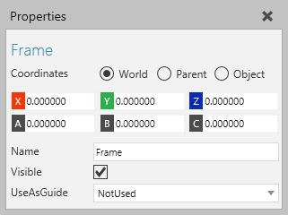
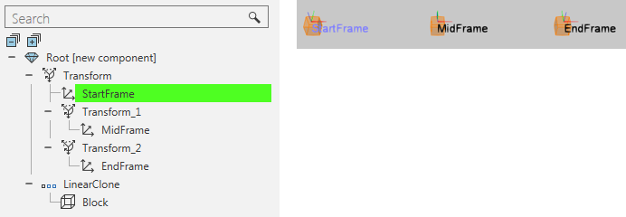

A Frame feature is a reference point in the 3D world with a defined position and orientation.

Frames are often transformed and referenced by behaviors to simulate actions.

| Name | Description |
| Name | Defines the name of the frame. |
| Visible | Turns on/off the visibility of frame. |
| UseAsGuide | Defines if the frame is used as a guiding point. |